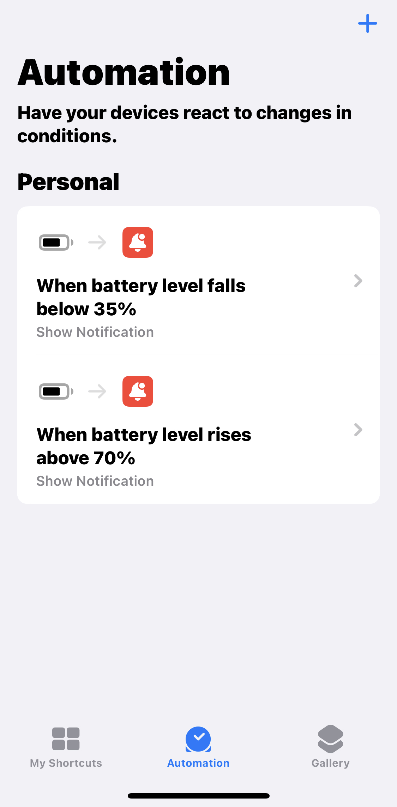
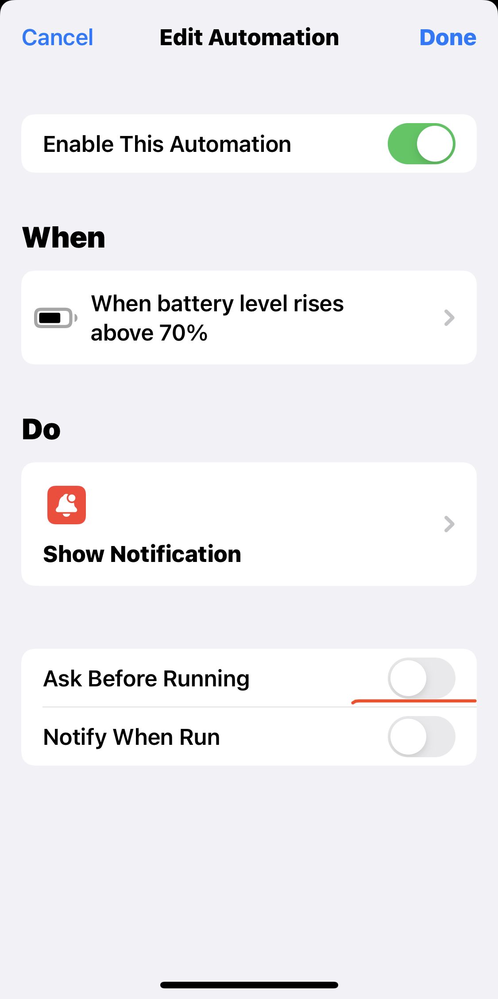

How I keep my iPhone battery at optimal level
on Dragoș Străinu's blogI am not a heavy user of mobile phones. I don't rush for the latest model and when I buy a phone I hope it to last for at least 4-5 years.
Till recently I owned an iPhone 7 for about 4 years. And I could own it a bit more, but the battery maximum capacity went down to 65% over years. It could last a maximum of 3 hours of active usage, and never a full day.
The battery died so fast because of incorrect usage of it. In special because the phone was used by my brother in the first year to play games all day.
After I bought a new iPhone 13 mini, I decided to charge the phone smarter to prolong the battery life.
Batteries in smartphones don't like being fully charged or discharged.
But how I could remember when to change it and when to stop changing?
iPhone shortcuts are here to help with this. They can do a ton of stuff. But for this specific use case, I use shortcuts automation.
I can add automation when the battery reaches a specific level, like below 35% or above 70%.

I decided to show a notification and disabled "Ask before Running".

Now each time the phone battery drops under 35% I get a notification on my smartwatch and plug the phone to change. And then the phone was changed to 70% I get another notification and remove the phone from changing.
Probably this technic is not a drastic improvement over "change it at night to 100%". But the feeling of prolonging the life of my phone brings joy. Let's see in 5-6 years what will be the battery health 😅.